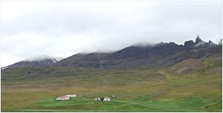

Ved et tilfælde faldt jeg en dag over Laxness' karakteristik af Jonas Hallgrimsson som Islands største digter. Navnet var mig bekendt fra min islandske frimærkesamling og fra Einar Jonssons skulptur, men nogen indgående viden om manden havde jeg ikke. Det måtte der rådes bod på, for når en så betydelig kulturpersonlighed som Laxness kunne fremhæve digterens geni helt uden forbehold, var der sikkert noget om det. I gang med studierne! Og pludselig vrimlede det med oplysninger om Hallgrimsson. Det viste sig nemlig, at her i 2007 fejrede man hans 200 års fødselsdag, både på Island og i Danmark. Altså tilbage til 1807, til stedet, tiden, rødderne. Jeg var bare en dreng Sådan erindrer Jónas Hallgrimsson senere den personlighedsdannende tragedie i første strofe af digtet ”Et digt om sorg”. Der er ingen tvivl om, at ulykken modnede den vordende digters syn på naturen, så en vis ambivalens kom til at præge det. Hvordan kunne Guds tilstedeværelse i naturen - samtidens panteistiske orientering - forklares, set i lyset af søens opslugning af en elsket far? Nej, naturen havde sin egen rå logik, dødsens farlig, dybt fascinerende. Jónas begyndte at se med nye øjne på vejr og vind, vækst og vulkaner, han blev bidt af naturvidenskaben. Årene efter faderens død kan betragtes som én lang forberedelse til latinskolen. Forskellige klerikale kapaciteter, deriblandt Einar Thorlacius fra Goddalir ved Skagafjorden, indførte ham i græsk og latin samt bibragte ham, hvad man på de tider opfattede som nyttig dannelse. Således stod han 16 år gammel klar med rejsesækken på vej til den førende undervisningsanstalt på Island, Bessastadir Latinskole. Allerede hos Thorlacius havde han truffet en jævnaldrende studerende, Brynjólfur Pétursson, som skulle blive en ven for livet, i Bessastadir mødte han yderligere to ligesindede, Konrád Gislason og Tómas Sæmundsson; disse tre udgjorde sammen med Jonas senere kvartetten bag det litterære tidsskrift Fjölnir. I 1829 fik Jónas Hallgrimsson sin studentereksamen efter en meget inspirerende tid i Bessastadir, og som tidligere gymnasielærer glæder det mig at læse om den positive indflydelse, latinskolens undervisere havde på den unge mands kreative og intellektuelle udvikling. Disse lærere har, tror jeg ud fra egen erfaring om elevtyper, oplevet et søgende, komplekst menneske med en tidligt modnet livserfaring, hvis evne til ”at spille bolden tilbage” bragte en frugtbar synergi ind i undervisningssituationen. Det vides, at da Hallgrimsson forlod latinskolen for at studere videre i København, var han blevet stærkt optaget af det islandske sprog og landets geografiske forhold, af litteraturskatten og de geologiske særpræg. Men selvom venerationen for øen var stærk og blandt andet førte til en intens agitation for national selvstændighed, forfaldt han ikke til provinsiel navlebeskuen; både dansk og udenlandsk kultur optog ham levende. Island, lykkelige hjemland og rigdoms frosthvide moder, Digtet
bliver forbilledligt for den nationale lyrik i midten af 1800
tallet, da der ikke blot er tale om et trivielt sværmeri
for fortiden, men om en implicit opfordring til - inspireret af
de europæiske frihedsbevægelser - at genopvække
kampgejsten fra landets store sønner, at varetage Islands
problemer selv, som Njal og kompagni gjorde det på tinge;
og disse var netop frie mænd med streg under frie! Det er
ikke svært at tilgive Hallgrimsson den til panegyrik grænsende
begejstring for fædrelandet,
når dens hensyn og mål er bevarelsen af en unik nordisk
kultur. At han i 2007 fejres for sit virke, er vel et tegn på,
at projektet lykkedes. Heltedaad, der aldrig glemmes selv i Tidens Høst Ni måneder bliver det til i Sorø, så må Steenstrup afbryde værtskabet på grund af en udenlandsrejse. Uden at have fået styr på Islandsstoffet vender Hallgrimsson næsen mod København, en rejse, som skal blive hans sidste. Plaget af lungeproblemer, en ”souvenir” fra opholdet på fødeøen, svækket af et eskalerende alkoholforbrug ser fremtidsudsigterne langtfra lyse ud. Så det kan ikke undre nogen, at det næsten øjeblikkeligt går galt for ham. En nat i begyndelsen af 1845 vil han efter en våd aften i byen forcere trappen til sit beskedne værelse i det indre København, han falder, skraber og brækker benet, der går blodforgiftning i såret, hvilket medfører hans lidet heroiske død. Han bliver 38 år gammel.  Hraun Da jeg i sommeren 2007 passerede gennem Øxnadalen på vej til Glaumbær, var det naturlig at tage en afstikker til Hraun for at se Jonas Hallgrimssons formodede fødested, hvor en mindestue ifølge turistkontoret i Akureyri var indrettet. Dalen er set fra hovedvejen vild og frodig på én gang, med masser af gårde skuttende sig dekorativt ved foden af kompakte bjergsider. Det var lidt svært at finde Hraun, men ad en smal, stenet sidevej lykkedes det endelig at komme frem til et lille hvidt hus, hvor jeg straks ringede på døren. En midaldrende islandsk dame iført tørklæde som værn mod støv og snavs og med spand og kost i hænderne åbnede forbavset døren: Jo, det var godt nok her, Jonas var født, men ikke i det hus, det oprindelige hus var for længst revet ned. Næh, mindestuen åbnede først til november, hun var netop ved at rydde og klargøre, men jeg kunne køre tilbage ad hovedvejen nogle hundrede meter og dreje til højre mod Steinstadir, der var der heller ikke noget at se, men her voksede han op. Taknemmelig over at være så fyldigt beriget, takkede jeg den venlige dame, tog for ikke at køre helt tomhændet bort et billede af Hraun for dog at fastholde indtrykket af stedet, naturen, der havde været med til at danne digteren og videnskabsmandens egenart. Mens bilen trillede videre gennem Øxnadalen spekulerede jeg på, hvorfor nu det på trods af visse tragikomiske islæt havde været fascinerende for undertegnede at lære Jónas Hallgrimssons liv og levned at kende. Vel fordi han var en innovator. Satte han måske ikke islandsk digtning på Europakortet og vakte det hjemlige parnas til dåd - skrev han måske ikke en dybt respekteret bog om Islands vulkaner - skabte han måske ikke en vejrtjeneste på øen? Jo, han gjorde og meget mere til, og det til trods for, at han havde tunge odds imod sig. Mange af landsmændene brød sig ikke om ham, syntes han var en fordrukken fantast, en bedrevidende kritiker, f.eks. af rimurdigtningen, politisk en ballademager, nærmest anarkistisk i sit syn på naturvidenskaben. Derfor fik han heller aldrig de stillinger, han søgte på øen og måtte slutte sit liv som en fattig boheme i Danmarks hovedstad. Først et halvt århundrede efter hans død tog man ham rigtig til sig, biografiske værker udkom, hans digte blev læst af en bred skare af islændinge. Endnu halvtreds år senere, i 1948, ønskede man hans jordiske rester hjem fra Assistens Kirkegård til et mindre ydmygt gravsted på Tingvellir. Jeg ved ikke, om det er sandt, men en Islænding har fortalt mig, at under opgravningen tog man fejl af ligene i graven - der lå hele tre - så det nu er en dansk slagtermesters gravsted, man dvæler ved på Tingvellir. Hvis der virkelig er noget om historien, mon ikke det så ville have moret den langt fra humorforladte islænding, hvis 200 års dag helt fortjent fejres med pomp og pragt i 2007. Copyrigt Preben Rasmussen
| |